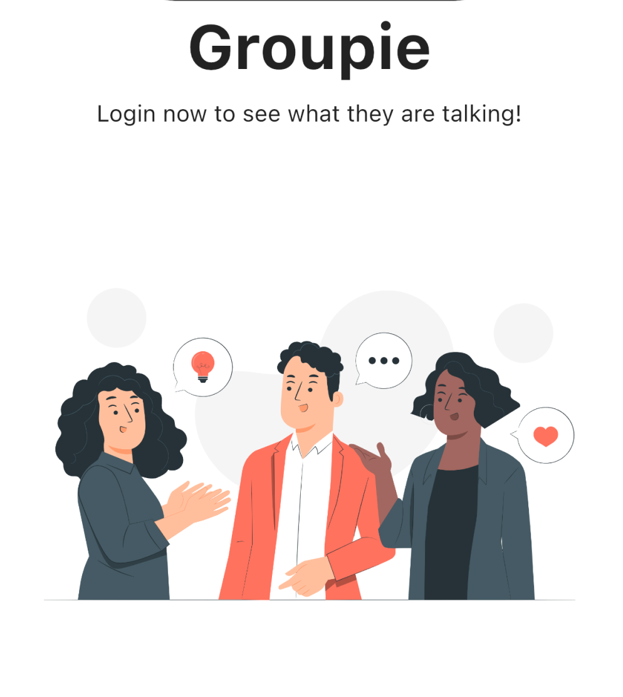
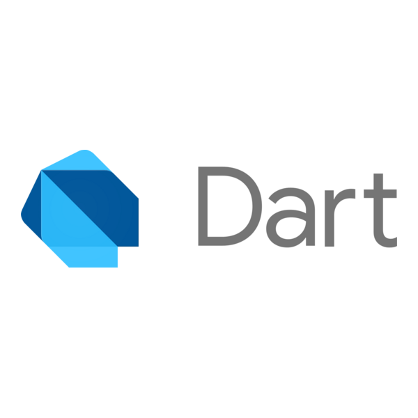
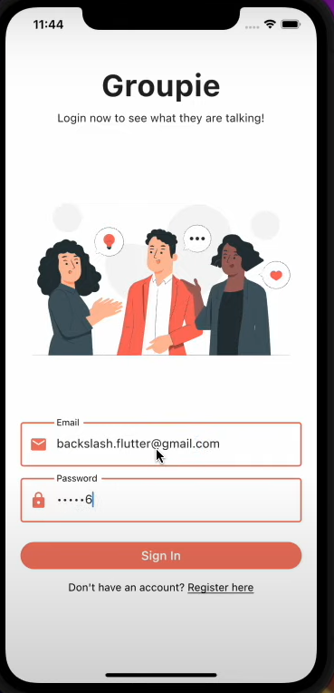
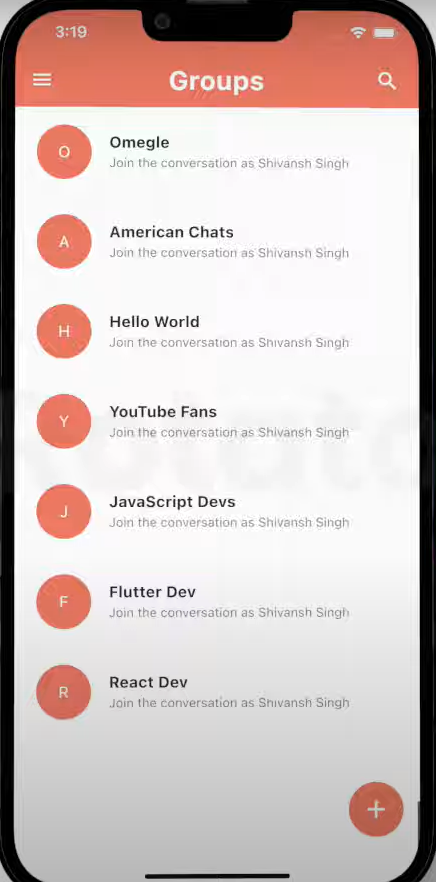
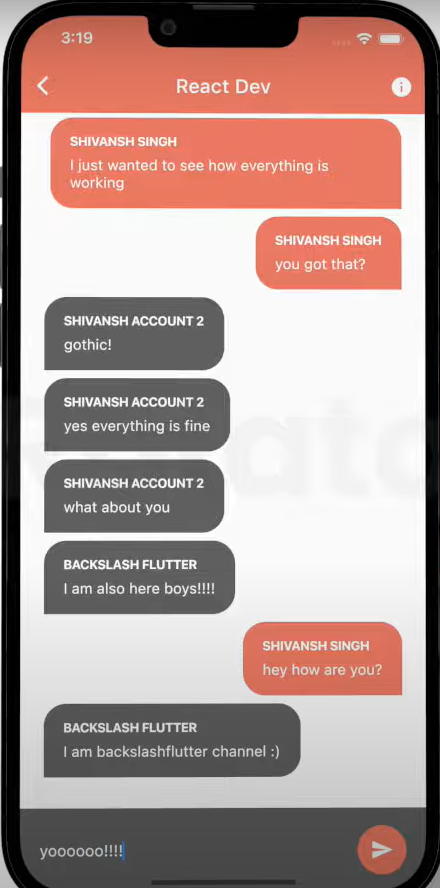

Gropie: Connect, Communicate, and Collaborate
Project Overview
The Gropie App is a dynamic chat application designed to keep you connected with friends, colleagues, and communities in real time. Whether you’re catching up with loved ones or collaborating with teammates, Gropie offers a seamless messaging experience that brings people closer together. The app empowers users to create groups, chat privately, and share media effortlessly, making communication simple, fast, and reliable.
With an intuitive interface and smooth performance, Gropie transforms everyday conversations into meaningful interactions. It’s not just a chat app — it’s a digital space where ideas flow freely, bonds are strengthened, and collaboration thrives.

Key Features
- Group Chats: Create groups for friends, colleagues, or communities, enabling smooth group communication.
- Private Messaging: Enjoy secure one-on-one conversations with friends or coworkers.
- Media Sharing: Send images, videos, and documents effortlessly, keeping everyone in the loop.
- Real-Time Communication: Experience instant messaging with reliable delivery, ensuring no message is missed.
- User-Friendly Interface: Designed with simplicity in mind, making navigation smooth for all users.
Technology Used


Real-World Applications & Potential Impact
Gropie has diverse applications, from personal connections to professional collaborations. Whether you’re organizing group projects, planning events, or just catching up with friends, Gropie ensures smooth communication for all scenarios. For workplaces, it offers a digital environment where team members can collaborate and exchange ideas effortlessly. For social groups, it provides a virtual hangout where conversations flow, and memories are made.



Conclusion
The Gropie App goes beyond traditional messaging by creating a space where communication and collaboration thrive. With features like group chats, private messaging, and media sharing, Gropie is more than just a chat app — it’s a digital bridge connecting people, teams, and communities. Whether you’re chatting with friends or coordinating a work project, Gropie makes sure you’re always connected, anytime and anywhere.